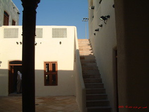
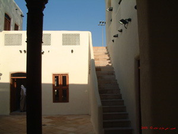
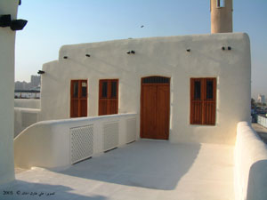

مقدمة
عمارة الخالد تقع في مدينة الكويت منطقة القبلة على شارع الخليج مقابل قصر السيف ، يعود تاريخ بناؤها إلى قبل عهد الشيخ مبارك الصباح ( مبارك الكبير ) ( 1314 – 1334 هـ ، 1896 – 1915 مـ ) اي ما بقارب مئة و عشرون عاماً .
كان الهدف من بناء العمارة من بدايته هو ان تكون كديوان صيفي لفهد الخالد الأول و إخوانة عبدالرزاق و عبدالله و زيد و حمد و سعود أبناء خالد الخضير أمهم فاطمة اليوسف البدر.
و جرت العادة لعائلة الخالد انهم ينطقون العَمارة بفتح العين .
التوسعات
لم يكن بجوار العمارة مسجد و لكنه بني عام ( 1235 هـ ، 1819 مـ ) من قبل السيد يعقوب يوسف آل غانم ، و من ثم زاد في بناءه العم حمد الخالد الخضير عام ( 1341 هـ ، 1922 مـ ) .
تم زيادة غرفة جنوبي شرق العمارة بعد عشر سنين من بناءها و ذلك لشغف العم فهد الخالد الأول بصيد السمك حيث أن الغرفة كانت تستخدم كمخزن السفينة الشراعية " الجالبوت " ذات اللون الأبيض .
و استطراداً على جالبوت العم فهد الخالد الأول حيث أنه كان له مجاديف إضافة إلى الشراع الذي كان يخزن في الغرفة الجنوبية الشرقية في فترة الشتاء ، و من جملة الصيد كان ذاك الهامور الضخم التي لا تخرقه السكين ، و إنما يستخدم الهيب " ساق طويل من الحديد المسنن من طرفية " للتعامل معه لتقطيعة للطبخ.
للعمارة دكة طويلة يجلس عليها الأعمام الستة أيام الصيف و يستقبلون زوارهم من أهل الكويت عامة ، و يقدمون لهم القهوة و التمر "الخضراوي" الذي يجنى من مزارعهم في البصرة عن طريق البحر ، بسفينة تسمى "بلم بصري" شراعي حتى الوقود " السعف و الكرب " يجلبونة من نفس المكان و يخزن التمر في غلات تسمى " قلة " من خوص النخل يستخدم قسم منه لتموينهم و الباقي يوزع كصدقات للفقراء و المساكين.
و بعد وفاة الاعمام ، تفرقت ذراريهم كلٌ في سكن خاص و لم يبقى إلا أبناء حمد في سكن واحد .
و كانت العمارة سكن لضيوف العائلة منذ أيام فهد الخالد الخضير " فهد الخالد الأول " إلى زمن فهد حمد الخالد " فهد الخالد الثاني" ، و من ضيوفهم الشيخ الثعالبي و الشيخ الشنقيطي ، و كذلك يذكر أنه أصاب نوخذة عماني هو و عائلتة حادث في البحر و هو بسفينته البغلة أدى إلى غرقها هي وحمولتها ، فأنقذة أهل الكويت و ضيّفه آل الخالد في العمارة إلى ان سهل الله أمره وعاد إلى بلاده.
و كذلك سكن في العمارة مهلهل حمد الخالد ثمانية عشر سنة بعد إصابتة بحادث سير في طريقة إلى البصرة الذي أدى إلى إصابتة بالشلل إلى أن توفى يرحمة الله .
و كانت العمارة في منطقة حيوية و ذات منظر جميل يطل على البحر .
كان لتنظيم البلدية لمدينة الكويت في الستينيات من القرن الماضي الفضل لإعادة الديوان إلى العمارة بعدما نقل إلى بيت الخالد "البيت العود" المجاور للمدرسة القبلية للبنات ، و أصبح لنا ديوانان الديوان الرئيسي و ديوان العَمارة.
خالد حمد الخالد
3/2/2006
بتصرف ...
جميع الحقوق محفوظة لموقع العمارة (ديوان الخالد - قبلة) - الكويت © 2019